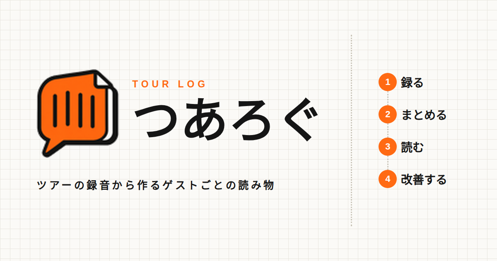
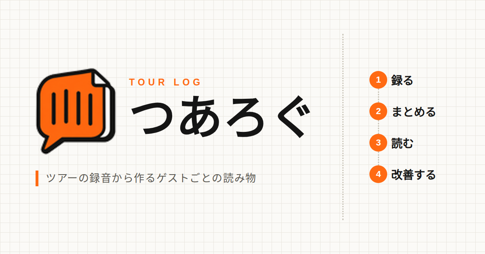
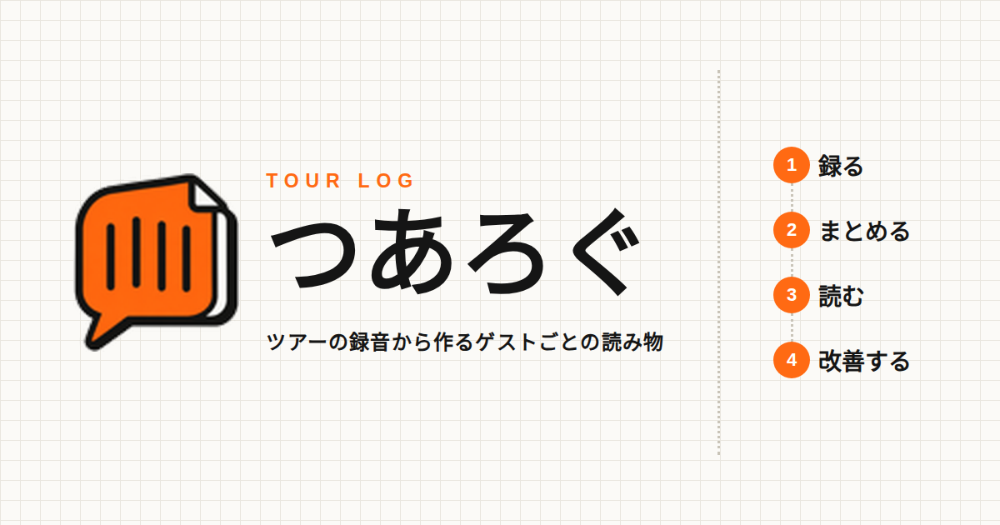
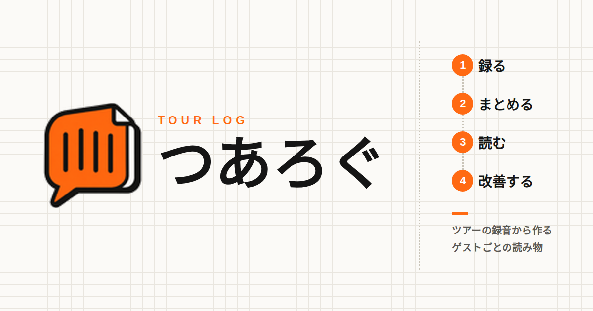
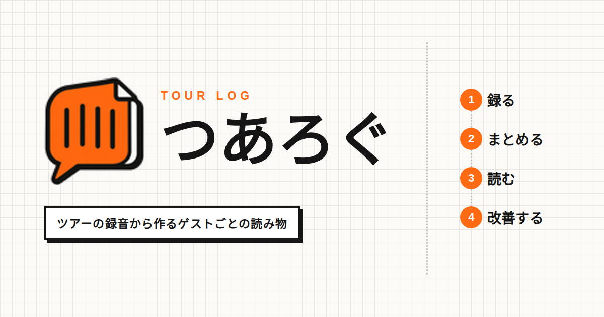

確定した配置バランス案3（左右分割・ステップ縦）＋英字ラベル「TOUR LOG」のまま、概要文の見せ方だけを変えた追加5案です。各案 1200×630 の原寸で載せています。
しっぽり明朝で小さめに組み、字間を広く取ってタイトル下に静かに置いた案。ゴシックの太いタイトルとの対比で「読み物」らしさと格調が出ます。

Zen Kaku Gothic New の細字（ウェイト500）に、左端へオレンジの縦バーを添えた案。色は落として軽く、バーが視線の起点になります。

概要をロゴの下ではなく「つあろぐ」の真下に寄せ、タイトルの左端と頭を揃えた案。太字のインク色で、名前と概要がひとかたまりに読めます。

概要を右カラムへ移し、ステップの下に小さく2行で置いた案。左側はロゴと名前だけになるので全体がいちばんすっきりします。

白地・太い黒枠・オフセット影のチップに概要を入れた案。つあろぐ／だんどりーで使っている黒ラベルの文法そのままで、ブランドの統一感が強い置き方です。
